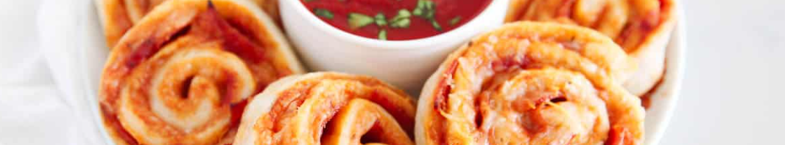
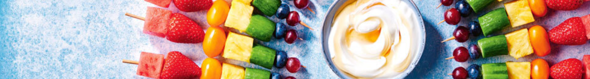

Popular Kids' Recipes
Pizza Pinwheels
These bite-sized pizza snacks are perfect for parties! Kids will love the cheesy goodness.
Ingredients:
- Puff pastry dough
- Tomato sauce
- Shredded mozzarella cheese
- Pepperoni slices
- Italian seasoning
Instructions:
- Roll out puff pastry dough.
- Spread tomato sauce and sprinkle cheese and pepperoni.
- Roll up and slice into pinwheels.
- Bake until golden and bubbly.
Rainbow Fruit Skewers
Colorful and healthy fruit skewers that kids will love. Perfect for snacks or parties!
Ingredients:
- Strawberries
- Pineapple chunks
- Green grapes
- Blueberries
- Purple grapes
Instructions:
- Thread fruit onto skewers in rainbow order.
- Serve as-is or with a yogurt dip.
Mini Pancake Cereal

Delicious mini pancakes served like cereal! Fun to eat and customizable with toppings.
Ingredients:
- Pancake batter
- Maple syrup
- Butter
- Fruit (optional)
Instructions:
- Cook mini pancakes using a squeeze bottle.
- Transfer to a bowl and drizzle with maple syrup.
- Add butter and fruit if desired.
- Enjoy with a spoon!
Veggie Quesadilla

Healthy and cheesy quesadillas filled with colorful vegetables. A perfect lunch or snack option.
Ingredients:
- Tortillas
- Shredded cheese
- Chopped bell peppers
- Sliced mushrooms
- Spinach leaves
Instructions:
- Layer tortilla with cheese and veggies.
- Fold in half and cook on a skillet until golden and crispy.
- Slice and serve with salsa or guacamole.
Fruit Smoothie Bowl

A refreshing and colorful fruit smoothie served in a bowl with toppings. A nutritious and delicious treat!
Ingredients:
- Frozen mixed berries
- Banana
- Yogurt
- Granola
- Sliced kiwi and strawberries
Instructions:
- Blend berries, banana, and yogurt until smooth.
- Pour into a bowl and top with granola, kiwi, and strawberries.
- Enjoy with a spoon!
Unicorn Popcorn

Colorful and magical popcorn coated in sweet candy melts. A whimsical snack for kids!
Ingredients:
- Popcorn
- White candy melts
- Food coloring (assorted colors)
- Sprinkles
Instructions:
- Melt candy melts and color with food coloring.
- Drizzle over popcorn and toss with sprinkles.
- Let it set before serving.